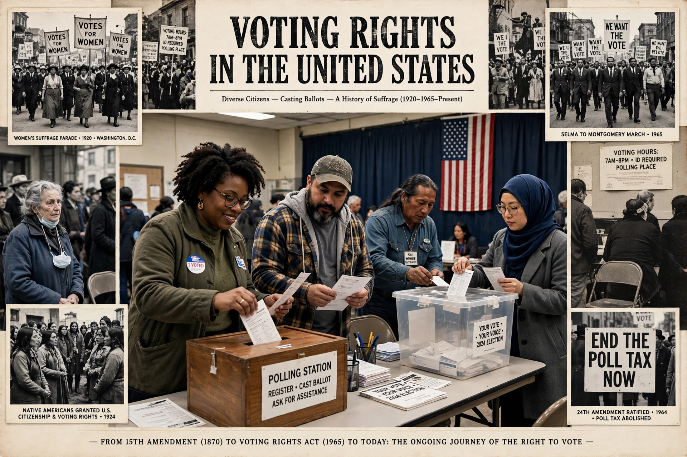

| Voting rights in the United States | |
|---|---|
 | |
| Key amendments | 15th (1870), 19th (1920), 24th (1964), 26th (1971) |
| Key statutes | Voting Rights Act of 1965; National Voter Registration Act of 1993 |
| Administered by | States, under federal constitutional limits |
Voting rights in the United States have expanded in stages from a franchise originally limited in most states to white male property owners to near-universal adult citizen suffrage. The US Constitution originally left voter qualifications to the states; a series of constitutional amendments and federal statutes progressively forbade exclusions based on race, sex, wealth and (above the age of 18) age. Because elections remain primarily state-administered, the practical content of the right to vote still varies considerably by state — particularly for citizens with felony convictions (see disenfranchisement).
Property qualifications for white men largely disappeared by the 1850s under pressure from Jacksonian democracy. After the Civil War, the Fifteenth Amendment (1870) prohibited denying the vote "on account of race, color, or previous condition of servitude", and Black men voted in large numbers during Reconstruction. The Nineteenth Amendment (1920) prohibited sex-based exclusion after a seventy-year campaign by the suffrage movement. Native Americans were made citizens by the Indian Citizenship Act of 1924, though state barriers persisted for decades. The Twenty-fourth Amendment (1964) banned poll taxes in federal elections (extended to state elections by Harper v. Virginia, 1966), and the Twenty-sixth Amendment (1971) lowered the voting age to 18, driven by Vietnam-era conscription of men too young to vote.
Southern states after 1877 systematically disenfranchised Black citizens through poll taxes, literacy and "understanding" tests, white primaries, and devices such as the grandfather clause (struck down in Guinn v. United States, 1915), backed by fraud and racial violence. Black registration in the Deep South fell to a few per cent. The civil rights movement — the Selma marches and "Bloody Sunday" of 1965 above all — produced the Voting Rights Act of 1965, which suspended literacy tests, imposed federal oversight ("preclearance") on jurisdictions with histories of discrimination, and sent federal examiners to register voters; Black registration and officeholding soared. The Supreme Court's Shelby County v. Holder decision (2013) invalidated the preclearance coverage formula, after which several states enacted new voting rules — voter ID requirements, roll purges, polling-place closures — that remain fiercely contested between charges of suppression and defences of election integrity.
Today most American citizens aged 18 or older may vote, subject to state residency and registration rules. Major exclusions include most non-citizens (a handful of localities allow non-citizen voting in local elections) and, in most states, people convicted of felonies. Administration is decentralised across some ten thousand jurisdictions supervised in each state by a chief election official, usually the secretary of state of that state. Recurring controversies include gerrymandering (see political polarization), early and mail voting, and the Electoral College's divergence from the national popular vote.
See also: Disenfranchisement · Grandfather clause · United States Secretary of State · Electoral College